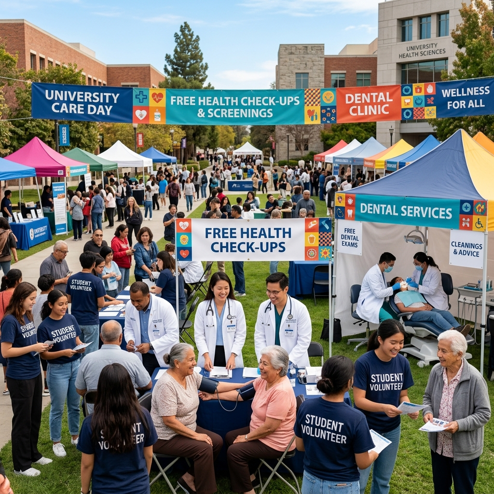
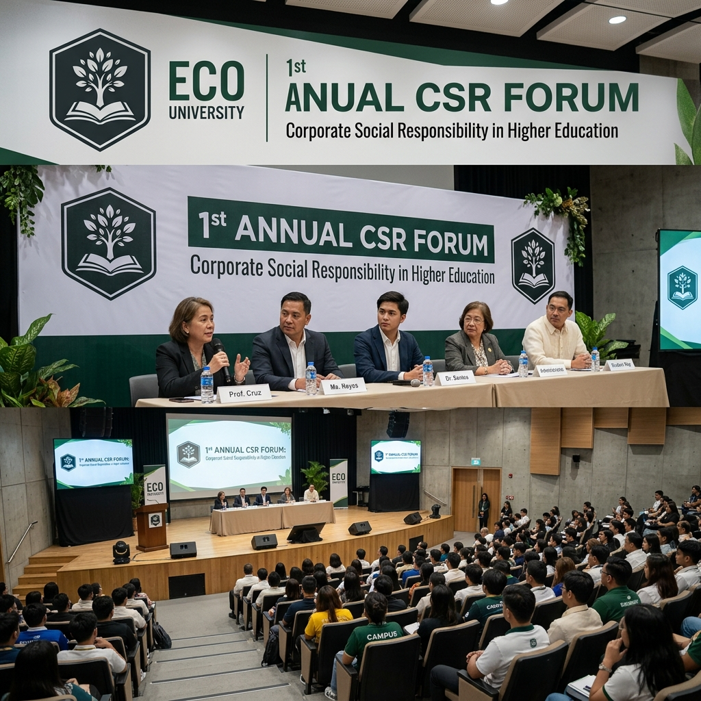
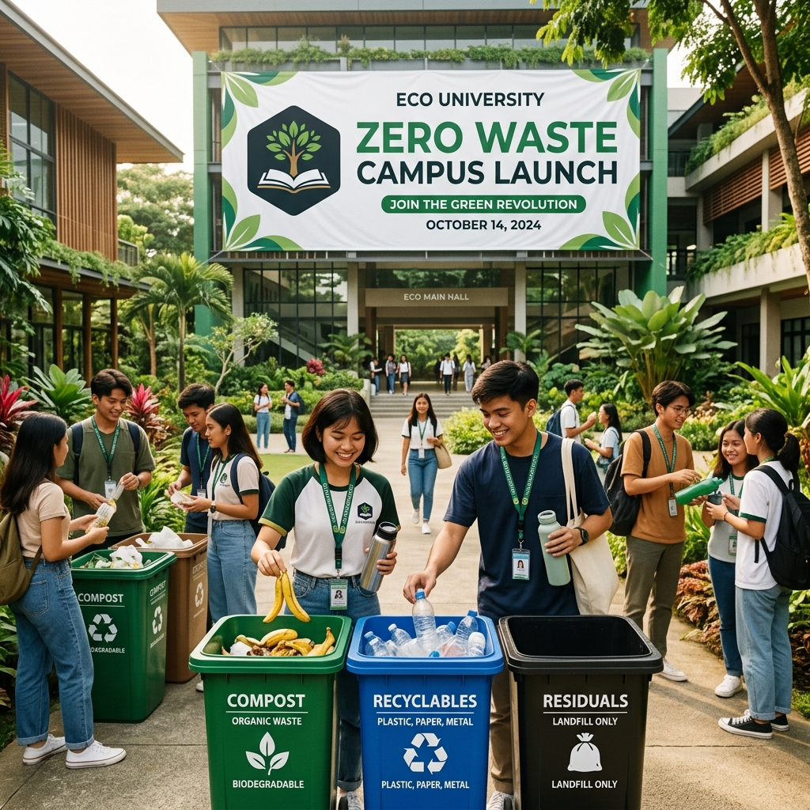
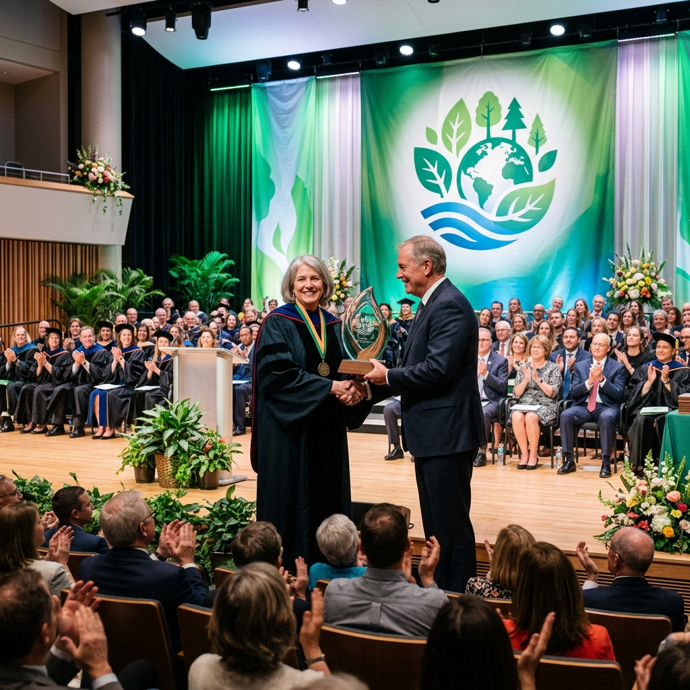

Eco University
Eco University
News & Updates
Empowering Education through Corporate Social Responsibility
Eco University
Empowering Education through Corporate Social Responsibility

Eco University has officially launched a comprehensive sustainability program designed to reduce our carbon footprint and promote eco-friendly practices across campus. The initiative includes energy audits of all major buildings, the installation of smart meters to monitor electricity usage, and the introduction of green construction standards for new facilities. Students are encouraged to participate through awareness campaigns, workshops, and research projects that explore innovative solutions to environmental challenges. This program not only strengthens our commitment to sustainability but also positions Eco University as a leader in higher education's response to climate change.

Eco University has expanded its renewable energy infrastructure by installing solar panels across multiple campus buildings. This project is expected to generate a significant portion of the university's electricity needs, reducing reliance on non-renewable sources and cutting annual emissions by 30%. The solar energy expansion also serves as a living laboratory for engineering and environmental science students, who will monitor performance and explore ways to optimize energy efficiency. By investing in renewable energy, Eco University demonstrates its commitment to long-term sustainability and innovation in higher education.

More than 500 students participated in a series of community clean-up drives organized by Eco University's Student Council. Activities included tree planting, waste collection, and recycling workshops conducted in partnership with local government units. These efforts not only improved the cleanliness and livability of surrounding neighborhoods but also fostered a strong sense of civic responsibility among participants. The initiative highlights the power of student-led action in driving meaningful change and reinforces Eco University's mission to cultivate socially responsible graduates.

Our recent community health outreach program was a resounding success, providing free medical check-ups, dental services, and wellness consultations to over 1,000 residents in nearby communities. Faculty from the College of Medicine partnered with local hospitals to deliver essential healthcare, while student volunteers assisted with logistics and patient care. Beyond medical services, the outreach also included educational seminars on nutrition, preventive care, and mental health awareness. This initiative reflects Eco University's dedication to improving public health and strengthening ties with the communities we serve.

Eco University hosted its inaugural Corporate Social Responsibility Forum, bringing together industry leaders, faculty, students, and community representatives to discuss the evolving role of CSR in higher education. Panel discussions covered topics such as ethical business practices, sustainable supply chains, and the integration of CSR into academic curricula. The event featured keynote addresses from sustainability experts and provided students with opportunities to network with professionals who are leading CSR efforts across various sectors. The forum was a landmark event for the university, reinforcing its position as a center of excellence for socially responsible education and research.

Eco University has officially adopted a comprehensive zero-waste policy aimed at eliminating single-use plastics and diverting at least 90% of campus waste away from landfills by 2026. The policy introduces color-coded waste segregation stations across all buildings, mandatory composting in the university cafeterias, and a ban on disposable plastic packaging in campus stores and events. Students and staff have responded positively, with many volunteering to serve as Zero-Waste Ambassadors who help guide and educate the campus community. The university views this policy as a cornerstone of its broader commitment to environmental responsibility and sustainable campus operations.

Eco University has been recognized with the Regional Sustainability Excellence Award, presented by the Council of Higher Education Institutions for Environmental Responsibility. The award acknowledges the university's outstanding contributions to environmental stewardship, including its campus-wide energy conservation programs, waste reduction policies, and community-focused green initiatives. University officials expressed pride in the recognition, noting that it reflects the collective dedication of students, faculty, and staff toward building a more sustainable institution. This achievement further motivates Eco University to continue raising the bar for responsible and sustainable higher education.